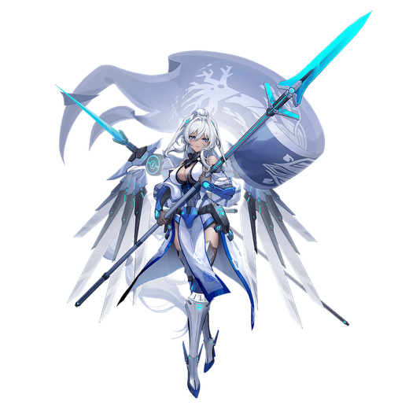

基本データ
- コスト
- 3.0
- 体力
- 未入力
- 赤ロック
- 29
- 動画
- 登録動画

Move Table
| 射撃 | 名称 | 弾数 | 威力 | 備考 |
|---|---|---|---|---|
| メイン射撃 | エルフの槍光 | 4(6) | 210 | 最大2連射 |
| サブ射撃 | エルフ槍術-貫星 | 1 | 315 | 移動速度低下を付与 |
| 横サブ射撃 | 立ち入り禁止 | 1 | - | 45~165 |
| サブ格闘 | 幻影同行 | 100 | - | - |
| 射撃派生 幻影槍 | (4(6)) | - | 225 | |
| 前格闘派生 エルフ槍術-裂岩 | 1 | - | 534 |
| 格闘 | 名称 | 入力 | 弾数 | 威力 | 備考 |
|---|---|---|---|---|---|
| 通常格闘 | エルフ槍術 | NNNN | - | - | 767 |
| 射撃派生エルフ槍術-激流 | N→射 | - | - | ~574 | ヒット数にブレがある |
| NN→射 | - | - | ~644 | ||
| NNN→射 | - | - | ~727 | ||
| サブ射派生エルフ槍術-陣風 | N→サブ射 | - | - | 822 | |
| NN→サブ射 | - | - | 841 | ||
| NNN→サブ射 | - | - | 859 | ||
| サブ射派生エルフ槍術-陣風 | 前→サブ射 | - | - | 764 | |
| 横格闘 | エルフ槍術 | 横NN | - | - | 630 |
| 射撃派生エルフ槍術-激流 | 横→射 | - | - | ~530 | |
| 横N→射 | - | - | ~650 | ||
| サブ射派生エルフ槍術-陣風 | 横→サブ射 | - | - | 795 | |
| 横N→サブ射 | - | - | 822 | ||
| 前格闘 | エルフ槍術 | 前 | - | - | 348 |
| 射撃派生エルフ槍術-激流 | 前→射 | - | - | ~466 | |
| 格闘サブ格派生 | 幻影同行 | N・前・横格闘中サブ格 | - | - | 特殊移動。弾数消費なし |
| 後格闘 | 墜星槍 | 後 | - | 1 | 240 |
| 150(遮断網) | - | 弾数性ピョン格+トラップ設置 |
| バーストアタック | 名称 | 威力 | 備考 |
|---|---|---|---|
| SB/FMD | 備考 | - | |
| バーストアタック | グンニグル | 792/720 | 単発の投擲 |